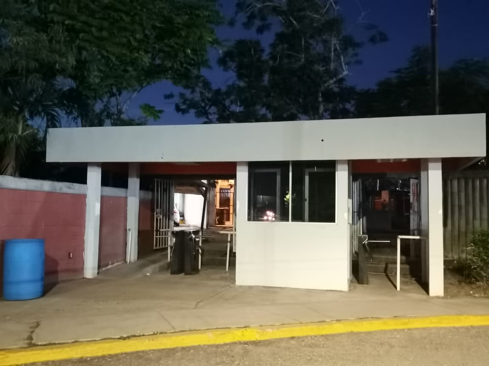
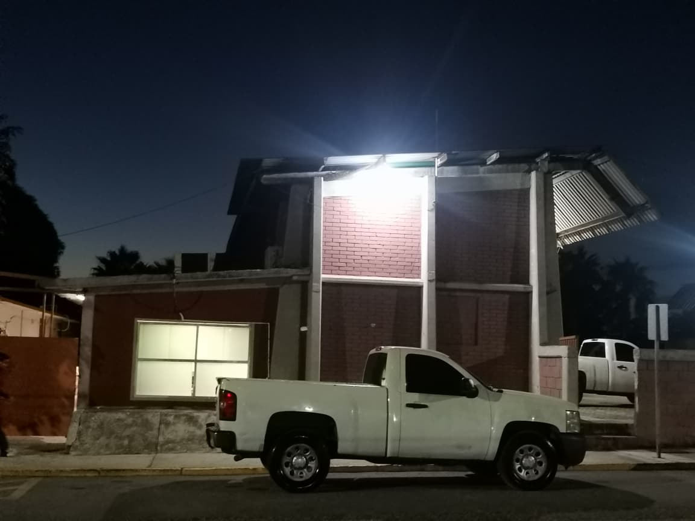
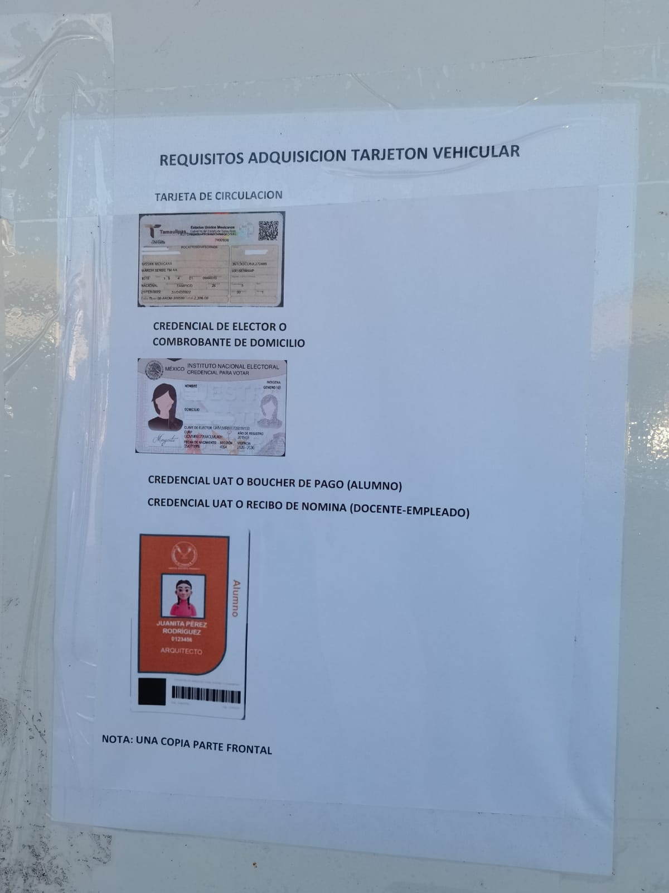

Evidencias de Levantamiento de Requisitos · Control de Acceso Vehicular UAT CUTM Sur
UNIVERSIDAD AUTÓNOMA DE TAMAULIPAS
Facultad de Ingeniería Tampico · Centro Universitario Sur
Ingeniería en Sistemas Computacionales
Sistema de Control de Acceso Vehicular para la UAT CUTM Sur
Solución basada en Google Apps Script y Google Sheets
Evidencias de levantamiento de requisitos
Evento
Concurso Hackatón · Facultad de Ingeniería Tampico
Equipo
Juan José Santiago Cruz Jared Said Constantino Lemus Juan Carlos Guzmán Antonio Jocelyin Mateo Saldierna Roberto Campillo Martínez
Versión
1.0
Tampico, Tamaulipas · 21 de noviembre de 2026
Índice
1. Introducción
1.1 Objetivo del levantamiento
Comprender el proceso real de registro y control de acceso vehicular en las tres casetas del campus UAT CUTM Sur, identificar la información que se captura, los casos especiales y las restricciones de operación, y obtener los requisitos del sistema directamente de quienes operan y administran el servicio.
1.2 Metodología
Cuestionario por grupo de interés. Se preparó un cuestionario para el personal de seguridad que opera las casetas y otro para los responsables administrativos del proceso (Anexo A).
Entrevistas semiestructuradas. Las preguntas del cuestionario guiaron la conversación; las respuestas se registraron en notas de campo y aquí se presentan redactadas, sin alterar su contenido. Por privacidad, se omiten los nombres de las personas entrevistadas.
Observación del proceso. La entrevista al personal de caseta se realizó en la caseta principal durante el horario de mayor afluencia, lo que permitió observar la revisión visual y la comunicación por radio.
Registro fotográfico. Se fotografiaron la caseta, la zona donde se tramita el permiso vehicular y el aviso con los requisitos del tarjetón (secciones 4 y 5.2).
Análisis. Cada hallazgo se convirtió en uno o más requisitos con identificador y origen (E1 o E2) en la Especificación de Requisitos de Software (sección 6). Las preguntas sin respuesta se registran como pendientes.
1.3 Plan de entrevistas
Plan y estado de las entrevistas
ID
Grupo
Preguntas
Fecha
Entrevistador(es)
Estado
E1
Personal de seguridad que opera las casetas
6
20/11/2026
Jocelyin Mateo Saldierna
Realizada
E2
Responsables administrativos del proceso
5
20/11/2026
Jocelyin Mateo Saldierna, Jared Said Constantino Lemus, Juan José Santiago Cruz
Realizada
2. Entrevistas
2.1 Entrevista E1: personal de seguridad de las casetas
Datos de la entrevista E1
Objetivo
Conocer el procedimiento actual de registro de entradas y salidas vehiculares, la información que se captura, la forma de identificar el tipo de usuario, los horarios de mayor afluencia y los recursos con que cuentan las casetas.
Fecha
20 de noviembre de 2026, por la tarde
Lugar
Caseta principal, UAT CUTM Sur
Participantes
Entrevistadora: Jocelyin Mateo Saldierna. Entrevistado(s): personal de seguridad de la caseta principal, encargado del registro de entradas y salidas.
Medio de registro
Notas de campo
Preguntas y respuestas
P1. ¿Cuál es el paso a paso exacto desde que un vehículo se detiene en la pluma hasta que se le permite el acceso o la salida?
El guardia revisa visualmente el vehículo y a sus ocupantes y, a partir de ello, deduce el tipo de visita. Por ejemplo, si viajan un hombre mayor y una joven, supone que se trata de un padre y su hija. En el caso de los servicios de transporte por aplicación, los identifica porque los pasajeros viajan en el asiento trasero.
P2. ¿Qué información específica anotan hoy en las hojas físicas y cuál consideran que les quita más tiempo escribir?
Anotan la empresa, el asunto y el destino de la visita. El formato tiene otros datos, pero no suelen llenarlos porque los consideran poco relevantes; no precisaron cuáles son. No se obtuvo respuesta sobre el dato que más tiempo les toma escribir.
P3. ¿Cómo identifican actualmente si quien conduce es estudiante, docente, administrativo o visitante externo?
A docentes y estudiantes, por su credencial. A los visitantes externos les solicitan su tarjeta de entrada, que se tramita sin costo en la UAT. Además, se apoyan en la apreciación visual.
P4. ¿En qué horarios del día se genera mayor congestionamiento en cada una de las tres casetas y cuánto tiempo máximo tienen para registrar un vehículo sin provocar filas?
El mayor congestionamiento ocurre por las tardes, el mismo horario en que se realizó la entrevista. En esos momentos solo hacen una revisión visual rápida, por lo que no anotan todos los vehículos. No se precisaron diferencias entre las casetas ni un tiempo máximo por registro.
P5. ¿Qué ocurre cuando llega un proveedor, un vehículo oficial, una ambulancia o un visitante sin cita previa? ¿Se registran distinto?
Preguntan el motivo de la visita y lo confirman por radio con la central. En el caso de una ambulancia, preguntan el motivo y, si es urgente, la dejan pasar; normalmente la siguen mientras confirman que el motivo sea verdadero.
P6. ¿Con qué equipo cuentan actualmente en las tres casetas y qué tan estable es la conexión a internet?
No cuentan con un sistema automatizado: el registro se hace en papel y la comunicación con la central, por radio. No se obtuvo información sobre la conexión a internet en las casetas.
Conclusiones de E1
El proceso es manual: registro en papel y verificación por radio.
La identificación del tipo de usuario depende de la credencial y, en buena medida, de la apreciación visual del guardia, lo que genera falta de uniformidad.
En las horas pico de la tarde no se registran todos los vehículos, por lo que el histórico es incompleto.
Las visitas sin cita y las emergencias se confirman por radio, sin un registro de la verificación.
El registro digital debe ser rápido y con pocos campos obligatorios para no generar filas.
Quedan por confirmar la conectividad de cada caseta y el tiempo máximo aceptable por registro.
2.2 Entrevista E2: responsables administrativos
Datos de la entrevista E2
Objetivo
Conocer quién administra el registro de vehículos, empleados y estudiantes, las reglas para autorizar vehículos y las necesidades de reportes, roles y bitácora del área administrativa.
Fecha
20 de noviembre de 2026
Lugar
Caseta principal, UAT CUTM Sur
Participantes
Entrevistadores: Jocelyin Mateo Saldierna, Jared Said Constantino Lemus y Juan José Santiago Cruz. Entrevistado(s): personal del área administrativa del registro vehicular.
Medio de registro
Notas de campo por puntos clave
Preguntas y respuestas
P1. ¿Quién será el encargado de dar de alta, modificar o dar de baja los vehículos autorizados, empleados y estudiantes en el sistema? ¿Existe ya alguna base de datos en Excel que debamos importar?
El registro de vehículos se realiza de forma presencial y el contacto responsable es el Ing. Carlos. El área cuenta con un programa en el que captura los datos del registro.
P2. ¿Existe algún límite de vehículos registrados por estudiante o empleado? ¿Los permisos de acceso tienen vigencia?
Se permite un solo tarjetón por persona; si la persona cambia de automóvil, el cambio se actualiza en el programa. El tarjetón tiene un nuevo diseño: blanco, con un correcaminos naranja. No se registró información sobre la vigencia de los permisos.
P3. De los reportes solicitados, ¿qué filtros específicos necesitan y con qué frecuencia los consultan?
No se registró respuesta en las notas de campo.
P4. ¿Qué roles administrativos tendrán acceso al sistema mediante su cuenta institucional y qué acciones debería tener restringidas cada rol?
No se registró respuesta en las notas de campo.
P5. ¿Qué nivel de detalle necesitan en la bitácora de actividades del sistema?
No se registró respuesta en las notas de campo.
Información adicional obtenida
Los alumnos de primer semestre que aún no tienen credencial presentan su ficha de pago como comprobante.
Los conductores de vehículos externos dejan en la caseta una credencial o identificación al entrar, que se les devuelve al salir.
Conclusiones de E2
El alta de vehículos es presencial y está centralizada en un responsable, que captura los datos en un programa propio del área; esa información podría migrarse al sistema.
La regla de negocio es un tarjetón por persona; el cambio de vehículo lo registra la administración.
La credencial no siempre está disponible: en primer semestre se acepta la ficha de pago como comprobante.
Al visitante se le retiene una identificación durante su estancia, sin que quede un registro digital.
Quedan por definir con la administración la vigencia de los permisos, los filtros y la frecuencia de los reportes, los roles y el detalle de la bitácora. Para la versión 1.0 el equipo adoptó una propuesta (Especificación de Requisitos, secciones 2.4 y 3.5) que debe validarse con el área.
3. Análisis del proceso actual
Con base en las entrevistas y la observación, el control de acceso vehicular actual se apoya en la revisión visual del guardia, el registro en papel y la comunicación por radio con la central.
3.1 Proceso actual
El vehículo llega a la pluma de la caseta.
El guardia revisa visualmente el vehículo y a sus ocupantes, y deduce el tipo de visita.
Identifica al conductor por su credencial (estudiante o docente) o, si es externo, por su tarjeta de entrada; también se apoya en la apreciación visual.
Si es un proveedor, un vehículo oficial, una emergencia o un visitante sin cita, pregunta el motivo y lo confirma por radio con la central.
Al conductor de un vehículo externo le retiene una credencial o identificación.
Cuando el tiempo lo permite, anota en la hoja física la empresa, el asunto y el destino.
Levanta la pluma y permite el acceso. A la salida del visitante, le devuelve su identificación.
Por el lado administrativo, el registro de vehículos es presencial con el responsable del área, que captura los datos en un programa. Para obtener el tarjetón se entrega una copia del frente de la tarjeta de circulación, de la credencial de elector o un comprobante de domicilio, y de la credencial UAT; en su lugar, los alumnos pueden presentar el comprobante de pago y los empleados, su recibo de nómina (Figura 3). Se permite un solo tarjetón por persona y el cambio de vehículo se actualiza en el programa del área.
3.2 Problemática identificada
Problemas y consecuencias
Problema
Consecuencia
Fuente
El registro se hace en papel.
No hay consulta histórica, reportes ni estadísticas de acceso.
E1 P6
En horas pico (por la tarde) no se anotan todos los vehículos.
La información está incompleta justo cuando hay más movimiento.
E1 P4
El tipo de usuario se identifica en parte por apreciación visual.
Hay errores y cada guardia aplica un criterio distinto.
E1 P1, P3
Las verificaciones con la central se hacen por radio.
No queda evidencia de quién autorizó un acceso ni por qué.
E1 P5
Los datos de vehículos y personas están en el programa del área administrativa.
La caseta no puede validar una placa o un tarjetón al momento.
E2 P1
El trámite del tarjetón es presencial y requiere copias impresas de los documentos.
El solicitante debe acudir en horario de oficina y el área captura a mano los datos de cada copia.
E2, Figura 3
Al visitante se le retiene una identificación física.
No queda constancia digital de quién entró ni de la identificación que dejó.
E2
Las casetas no tienen un sistema automatizado y su conectividad no se ha confirmado.
Antes de implantar una solución digital hay que verificar la conexión en cada caseta.
E1 P6
4. Fotografías
Fotografías tomadas durante el trabajo de campo en el campus UAT CUTM Sur, en noviembre de 2026.

Caseta de control de acceso del campus, donde el registro se hace en papel y la comunicación con la central, por radio (entrevista E1).

Zona donde se realiza el trámite presencial del permiso vehicular (tarjetón).

Aviso «Requisitos adquisición tarjetón vehicular» publicado en la zona de trámite. Las credenciales que aparecen son ejemplos del propio aviso.
5. Bitácoras
5.1 Bitácora del levantamiento
Actividades del levantamiento de requisitos
Fecha
Actividad
Resultado
20/11/2026
Lectura y análisis de las bases del Hackatón.
Alcance funcional mínimo, entregables y ambigüedades a resolver.
20/11/2026
Elaboración del cuestionario de entrevistas (Anexo A).
11 preguntas: 6 para el personal de seguridad de las casetas y 5 para la administración.
20/11/2026
Entrevista E1 en la caseta principal, en horario de mayor afluencia.
Proceso actual, datos que se anotan, casos especiales y operación en papel y radio.
20/11/2026
Entrevista E2 con el área administrativa.
Responsable del registro, programa del área, regla de un tarjetón por persona, ficha de pago y retención de identificación de visitantes.
20/11/2026
Análisis de respuestas y redacción de requisitos.
Requisitos con origen E1 y E2; contrato de API entre interfaz y servidor.
21/11/2026
Validación de los requisitos contra el sistema construido.
Especificación de Requisitos de Software v1.0; requisitos diferidos a versiones futuras.
Nov. 2026
Registro fotográfico de la caseta, la zona de trámite y el aviso de requisitos del tarjetón.
Figuras 1 a 3; requisitos oficiales del tarjetón.
5.2 Formatos y documentos observados
En la caseta, las visitas se anotan en hojas físicas con empresa, asunto y destino (entrevista E1). En la zona de trámite, el aviso de la Figura 3 indica los requisitos para adquirir el tarjetón vehicular:
Requisitos para adquirir el tarjetón vehicular, según el aviso publicado
#
Documento
Alternativa
1
Tarjeta de circulación
—
2
Credencial de elector
Comprobante de domicilio
3
Credencial UAT (alumno)
Comprobante de pago
4
Credencial UAT (docente o empleado)
Recibo de nómina
Se entrega una copia de la parte frontal de cada documento. Estos requisitos coinciden con los que pide la solicitud en línea del registro vehicular estudiantil: tarjeta de circulación y credencial de elector, más la confirmación de inscripción con la cuenta de la UAT.
6. Trazabilidad de las entrevistas a los requisitos
Cada hallazgo de las entrevistas se convirtió en uno o más requisitos de la Especificación de Requisitos de Software. Los que no forman parte de la versión 1.0 están registrados como requisitos para versiones futuras.
De los hallazgos a los requisitos
Fuente
Hallazgo
Requisitos
E1 P1, P3
El tipo de usuario se identifica por credencial y apreciación visual.
RF-004 (verificar la placa muestra el tipo del propietario), RF-020 (el guardia elige el tipo en una visita).
E1 P2
Se anotan empresa, asunto y destino de la visita.
RF-020 (nombre y motivo); RF-038 futura (identificación, empresa y destino por separado).
E1 P4
Por las tardes hay filas y no se anota todo.
RNF-007 y RNF-015 (registro en tres acciones y 10 segundos o menos), RF-013 (horarios de mayor afluencia).
E1 P5
Visitas sin cita y emergencias se confirman por radio.
RF-021 (advertir sin bloquear), RF-024 (nota del registro); RF-036 y RF-037 futuras (emergencias y verificación con la central).
E1 P6
Registro en papel y radio; conectividad sin confirmar.
RF-001, RF-002 y RF-018 (registro digital con bitácora), RNF-013 (verificar conexión antes de implantar).
E2 P1
El alta es presencial y los datos están en un programa del área.
RF-008 y RF-009 (catálogos en el portal), RF-027 y RF-028 (registro estudiantil en línea); RF-035 futura (importar desde el programa del área).
E2 P2
Un tarjetón por persona; el cambio de vehículo lo hace la administración.
RF-008 (desautorizar un vehículo y dar de alta otro); RF-033 y RF-034 futuras.
E2 (adicional)
En primer semestre se presenta la ficha de pago en lugar de la credencial.
RF-027 (la inscripción se confirma con la cuenta institucional, sin depender de la credencial física).
E2 (adicional)
Al visitante se le retiene una identificación.
RF-020 y RF-024 (datos de la visita y nota); RF-038 futura (registrar la identificación presentada).
Figura 3
Requisitos del tarjetón: tarjeta de circulación, credencial de elector y credencial UAT o comprobante de pago.
RF-028 (la solicitud en línea pide tarjeta de circulación e INE), RF-029 (prevalidación de esos documentos), RF-027 (inscripción confirmada con la cuenta de la UAT).
E2 P3 a P5
Sin respuesta: filtros de reportes, roles y detalle de bitácora.
RF-011 a RF-014, RF-016 a RF-019 según propuesta del equipo, pendiente de validar.
Anexo A. Cuestionario de entrevistas
Formato utilizado en las entrevistas. Cada entrevista registra objetivo, fecha, lugar, entrevistadores, entrevistados, respuestas y conclusiones.
A.1 Personal de seguridad de las casetas
¿Cuál es el paso a paso exacto desde que un vehículo se detiene en la pluma hasta que se le permite el acceso o la salida?
¿Qué información específica anotan hoy en las hojas físicas y cuál consideran que les quita más tiempo escribir?
¿Cómo identifican actualmente si quien conduce es estudiante, docente, administrativo o visitante externo?
¿En qué horarios del día se genera mayor congestionamiento en cada una de las tres casetas y cuánto tiempo máximo tienen para registrar un vehículo sin provocar filas?
¿Qué ocurre cuando llega un proveedor, un vehículo oficial, una ambulancia o un visitante sin cita previa? ¿Se registran distinto?
¿Con qué equipo cuentan actualmente en las tres casetas y qué tan estable es la conexión a internet?
A.2 Responsables administrativos
¿Quién será el encargado de dar de alta, modificar o dar de baja los vehículos autorizados, empleados y estudiantes en el sistema? ¿Existe ya alguna base de datos en Excel que debamos importar?
¿Existe algún límite de vehículos registrados por estudiante o empleado? ¿Los permisos de acceso tienen vigencia?
De los reportes solicitados, ¿qué filtros específicos necesitan y con qué frecuencia los consultan?
¿Qué roles administrativos tendrán acceso al sistema mediante su cuenta institucional y qué acciones debería tener restringidas cada rol?
¿Qué nivel de detalle necesitan en la bitácora de actividades del sistema?